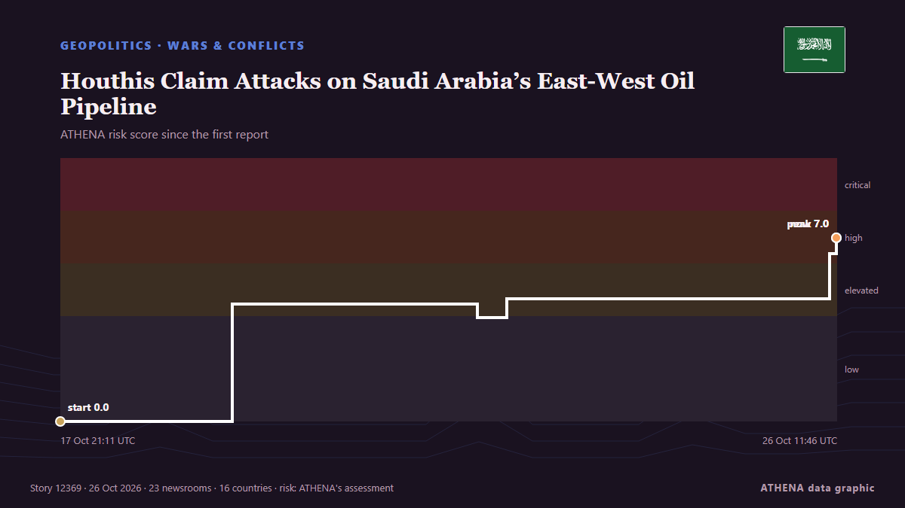

Ναυτιλία
Ναυτιλία και θαλάσσια περάσματα σήμερα
Τελευταίο 24ωρο — γεγονότα: 34, χώρες: 26. Υψηλότερος κίνδυνος τώρα: 6.8 — Saudi Arabia and Yemen Warn of Iran-Backed Houthi Threat to Hormuz, Bab el-Mandeb Shipping.

ΓεωπολιτικήHouthis Claim Attacks on Saudi Arabia’s East-West Oil Pipeline
The Iran-backed Houthis on Monday claimed they attacked pumping stations along Saudi Arabia’s East-West onshore oil pipeline, the Kingdom’s key crude export route bypassing the Strait of Hormuz. από OilPrice.com
| 18 Οκτ | 4 |
|---|---|
| 19 Οκτ | 10 |
| 20 Οκτ | 13 |
| 21 Οκτ | 7 |
| 22 Οκτ | 18 |
| 23 Οκτ | 12 |
| 24 Οκτ | 11 |
| 25 Οκτ | 14 |
| 26 Οκτ | 12 |
| 27 Οκτ | 20 |
| 28 Οκτ | 12 |
| 29 Οκτ | 18 |
| 30 Οκτ | 19 |
| 31 Οκτ | 2 |
Ναυτιλιακό γραφείο: λιμάνια, διαδρομές και περιστατικά →
Παρακολούθηση
Τελευταία
Saudi Arabia flight update: India-bound services resume from Riyadh, Indian Embassy says
Riyadh went quiet, but Saudi airspace didn't: where flights went after the airport attacks. από Simple Flying
Erdogan, Zelensky talk Black Sea Grain Corridor
Turkish President Recep Tayyip Erdogan and Ukrainian President Volodymyr Zelensky agreed on Saturday to continue work on the Black Sea Grain Corridor, aimed at enabling grain shipments from Ukraine. από AzerNews
Egypt approves military support for Saudi Arabia after Houthi attacks escalate
Saudi Arabia is a major political, financial partner of Cairo, providing billions of dollars in aid, energy supplies. από Express Tribune
Iran says discussing plan with mediators to end war, reopen Hormuz
A Qatari delegation visited Tehran on Sunday for talks to review developments including the latest on negotiations, Hormuz and energy supplies. από Free Malaysia Today
Iran Guards Say Halted 3 Tankers After 'Incidents' In Strait Of Hormuz
The Iran Guards did not specify the nature of the incidents, which came a day after Iran's armed forces said at least four tankers had stopped in the area after hitting mines. από NDTV
Romania blames Russia for drone that sinks cargo ship; 1 killed, 3 missing
Romania’s rescue operation recovered nine people and one deceased body from a distressed ship in the Black Sea, while three remain missing. από Arab News
Saudi says Riyadh airport partly reopens despite renewed Houthi threats
Saudi Arabia said its main airport had partially resumed operations at two terminals on Sunday despite renewed threats to target it from Yemen’s Iran-aligned Houthis, as the kingdom intercepted… από Cyprus Mail
Yemen: 75 new recruits killed in Houthi missile strike laid to rest
A mass funeral was held Wednesday for 75 new recruits killed earlier this week in a Houthi missile strike in southern Yemen that was the deadliest attack since the resurgence of fighting in the Yemen… από Africanews (English)
Houthis strike Yemen's Aden airport after evacuation warning
ADEN/DUBAI, Oct 28 - Yemen's Houthis attacked Aden airport on Wednesday, government officials said, after the Iran-aligned group warned people to evacuate the facility as fighting escalated in the… από The Straits Times
CONTSHIP JET Container Ship Sinks After Drone Attack in Black Sea
The CONTSHIP JET sank after being struck by three drones off Bulgaria; 18 crew rescued, and 20 containers fell into the sea. από SeaNews Türkiye
Yemen's Houthis say they attacked Saudi Ras Tanura refinery, no Saudi confirmation
Yemen's Houthis claimed attacks on three Saudi oil facilities and two international airports. από The Jerusalem Post
Egypt, Bahrain and UAE Back Greece Over Turkey-Libya Maritime Deal
Greece gains the backing of Egypt, Bahrain and the UAE in opposing the Turkey-Libya maritime accord, as tensions over maritime boundaries and energy exploration intensify. από Greek City Times